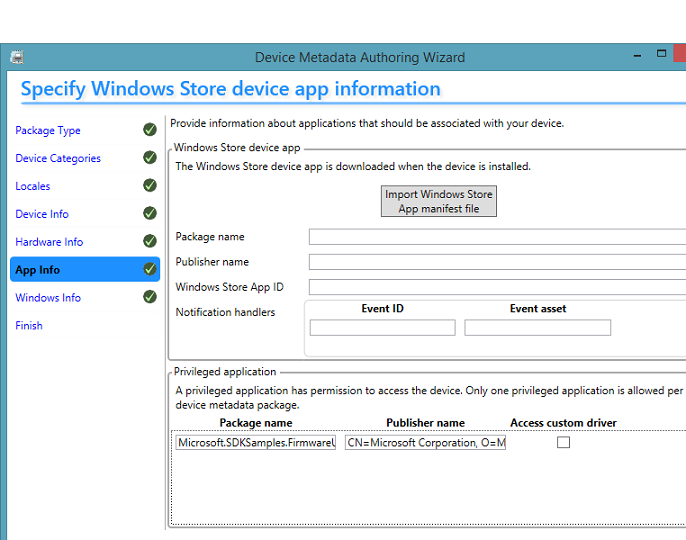

This sample shows how a Windows Store app can update the firmware of a USB device. The update operation runs as a background task. The sample demonstrates the use of the Windows.Devices.Usb namespace.
To run this sample you need:
- A SuperMUTT device. You can purchase the device from JJG Technologies.
| Windows runtime class | Description |
|---|---|
| FirmwareUpdate |
The class implements methods that updates firmware in a background process that is separate from the process in which the app runs.
|
Related topics
Related technologies
Windows.Devices.UsbProvides Windows Runtime classes and enumerations that a Windows store app can use to communicate with an external USB device that uses WinUSB (Winusb.sys) as the device driver.
, Windows.ApplicationModel.BackgroundEnables an app to schedule background tasks to run app code even when the app is suspended.
Operating system requirements
| Client | |
|---|---|
| Server |
Build the sample
Flash the SuperMUTT device to load the driver
To automatically load Winusb.sys as the device driver:
- Download and install the MUTT Software Package.
- Open a command prompt and run the MuttUtil tool included in the package. Use the tool to update the firmware:
MuttUtil.exe –forceupdatefirmware - By using the MuttUtil tool, change the device mode to WinRTUsbPersonality:
MuttUtil.exe –SetWinRTUsbThe SuperMUTT device when configured in WinRTUsbPersonality mode, exposes configuration, interfaces, and endpoints, that work with the sample.
Building the Sample
To build this sample, open the solution (.sln) file titled FirmwareUpdateUsbDevice.sln from Microsoft Visual Studio 2013. Press F7 or go to Build->Build Solution from the top menu after the sample has loaded.
Run the sample
- Update the device metadata to indicate that the sample is a privileged app.

- Open the Finish tab. Select the Copy packages to your system's local metadata store check box.
Note Alternatively, you can copy the metadata manually to %PROGRAMDATA%/Microsoft/Windows/DeviceMetadataStore.
- Connect the device to the computer.
- In Control Panel, open View devices and printers and verify that the icon of the device is this image:

- Verify that the device description is: Device Metadata Package Sample for SuperMUTT.
- View the properties. Notice that the description specifies the specific sample associated in the device metadata. For example, for the C++ sample, the description shows To be used for Updating Firmware with C++ sample. This string is useful for identifying the sample when you are running JavaScript, C#/VB.NET samples simultaneously.
- To run this sample after building it, press F5 (run with debugging enabled) or Ctrl-F5 (run without debugging enabled), or select the corresponding options from the
Debug menu. To deploy the app, select Build > Deploy FirmwareUpdateUsbDevice.
Note The first time you run the sample, you will be prompted whether you allow the app to use the USB device. Choose Allow to proceed.
- Click Perform a firmware update on the first available device to start updating the device.
- View the progress of the operation.
- When the output string shows Firmware update completed, verify that the Firmware version after firmware update shows the correct version.
- To cancel the update, click Cancel firmware update.

Known issue
Applies to C++ and C# samples: The app might unexpectedly terminate when the user tries to cancel a firmware update request that is in progress.
Each time the sample app initiates a request to update the device firmware, the app starts a background task. As the task runs, it first waits for approximately 30 seconds while the device prepares itself for the update (implemented with a Concurrency::wait call in SetupDeviceForFirmwareUpdateAsync). During that time, the progress bar does not move.
If the user cancels the request during the 30-second period, the app cannot cancel the background task because of the wait call. Because there is a system-imposed time limit on completing tasks when they are canceled, the system terminates the background task and the app closes.
To avoid that unexpected termination, replace all Concurrency::wait methods in the sample with this Wait implementation. Make sure you call Wait().get() to allow any cancellation exception to propagate through the task chain.
The following workaround is suggested for C++ apps.
| C++ |
|---|
/// <summary>
/// Waits for a caller specified time, but it checks every second to determine whether the task was canceled.
///
/// Must call Wait().get() to propagate the canceled exception.
///
/// If the background task is canceled, the task must be completed within a certain amount of time
/// (See "How to handle idle or hung background tasks" in MSDN). Otherwise, the
/// system terminates the background task and the app.
///
/// In order to complete the task within the system-imposed time limit, the background task cannot wait for too long.
/// This implementation waits and checks whether the task was canceled in small intervals to prevent a long wait.
/// </summary>
/// <param name="millisecondsToWait"></param>
task<void> UpdateFirmwareTask::Wait(uint32 millisecondsToWait)
{
return task<void>([millisecondsToWait] ()
{
uint32 timeLeftToWait = millisecondsToWait;
// Split waits so that the background task does not wait more than the specified amount of time
while (timeLeftToWait > 0)
{
if (is_task_cancellation_requested())
{
cancel_current_task();
}
uint32 timeToWait = 0;
if (timeLeftToWait > FirmwareUpdateTaskInformation::MaxWaitTimeBetweenCancellationChecks)
{
timeToWait = FirmwareUpdateTaskInformation::MaxWaitTimeBetweenCancellationChecks;
}
else
{
timeToWait = timeLeftToWait;
}
wait(timeToWait);
timeLeftToWait -= timeToWait;
}
}, cancellationTokenSource.get_token());
}
|
The following workaround is suggested for C# apps. When calling Task.Delay, include a cancellation token as an argument, as shown here:
| C# |
|---|
await Task.Delay(30000, cancellationTokenSource.Token); |